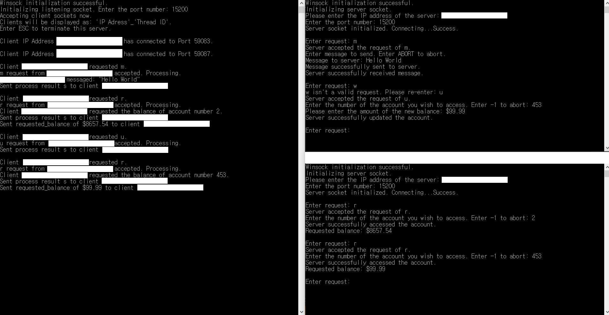

An Android application that estabilshes a Transmission Control Protocol (TCP) connection between the app's client written in Java and a Desktop Computer's server written in Python to grant the user a remote access to the PC. The app features a full virtual keyboard, mouse cursor movement, First Person Shooter game control (my personal interests in games) and a list of hotkeys for the computer.
Projects

A project that simulates a simple bank account balance tracker. Program is able to read or write on the bank account balances from multiple users simultaneously through a TCP Window socket connection using multi-threaded system. The bank balance data is managed through a set-associative cache system with features such as Least Recently Used(LRU), Dirty Bit and write-back policies.

A Python script that allows the user to view all news articles from CNN / Fox News except for the ones that contain the keywords user inputs into the provided filter. Unlike the conventional filters that provide articles that contain the keyword and discard the rest, this filter in opposite is used to view all the general headlines while discarding the ones that contain the keyword. This filter is useful when the user wishes to view all the headlines in the main page spanning multiple sections discarding only the unwanted articles.
Military base sentry /
guard duty scheduler
Computerized the old military sentry / guard duty scheduling system by developing a C++ program to automatically generate a schedule that is fairer and more efficient than creating the schedule by hand. I Designed the data structures including a custom functor for the priority queue based on the conventional scheduling system and modified the program regularly as the scheduling rules changed or as the CO requested.

3DSSPP software is a C++ job simulation program that provides posture data,
force parameters, male/ female anthropometry, static strength requirements for tasks
such as lifts, presses, pushes, and pulls. The software can aid the analyst in designs
and redesigns prior to the actual construction or reconstruction of the workplace or
task.
I was responsible for the updates of the outdated codes to newer versions to make the
project compatible with Visual Studio 2015, design of the UI, debugging and
optimization of human module rendering and the development of the module's ankle
restraints.

A real time strategy (RTS) game developed with Unity engine during the Game Jam hosted by the Wolverine Soft. The game was developed by a team of 2 programmers, 1 musician and an artist. The player is a king who tries to protect the castle from the rioters, and controls the soldiers spawnable during the preparation phase to fight enemies that grow larger in number as the stage progresses.